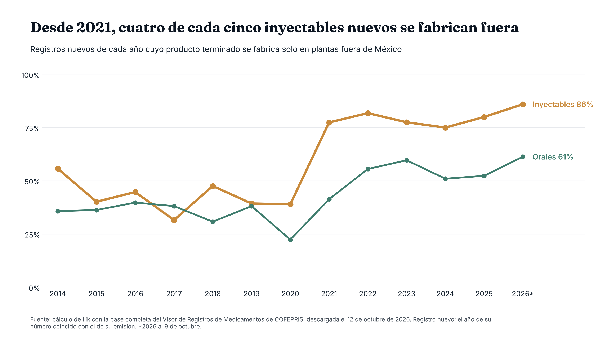
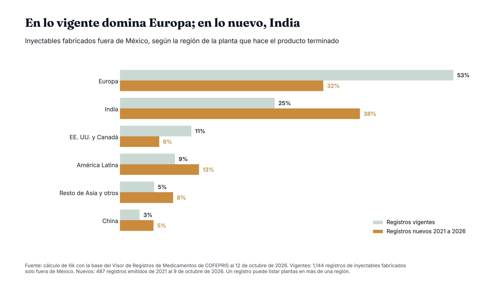
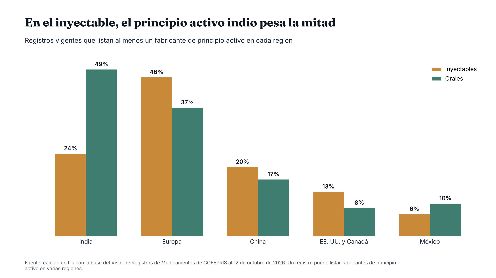
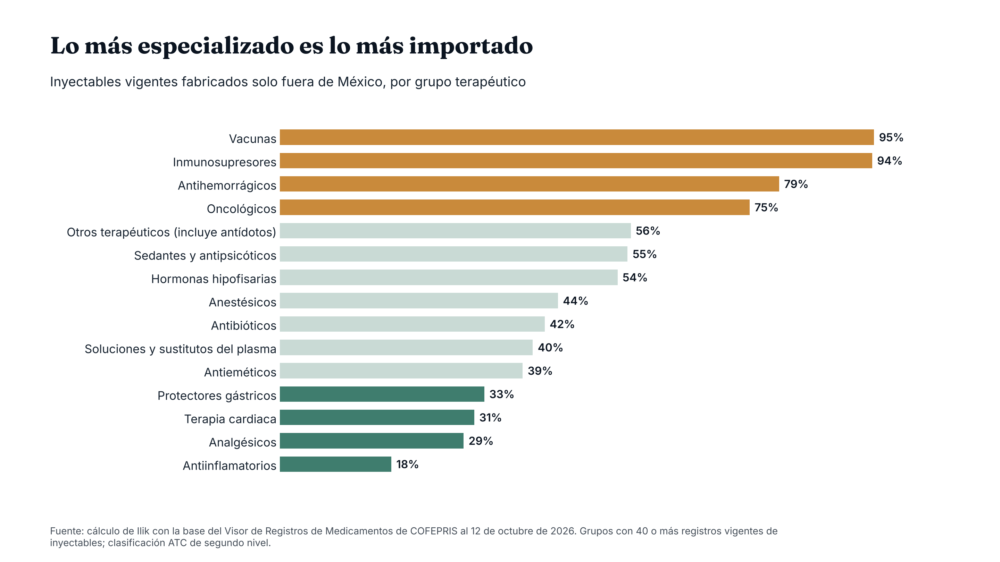

Observatorio / Medicamentos y COFEPRIS
Investigación¿De dónde viene realmente el inyectable que su hospital compra?
La mitad de los inyectables con registro vigente en México se fabrica por completo fuera del país, y desde 2021 la proporción entre los nuevos ronda cuatro de cada cinco. Lo que ya está en el mercado viene sobre todo de Europa; lo que entra ahora, cada vez más de India.
Cuando se habla del origen de los medicamentos en México, casi siempre se habla de India. Hay razones: la mitad de los registros sanitarios que COFEPRIS emitió en 2026 lista un fabricante indio de principio activo, y dos de cada tres de esos registros son de medicamentos orales. El inyectable, el que se aplica a diario en quirófanos, urgencias y hospitalización, tiene otro mapa.
De los 2,217 inyectables con registro vigente y planta identificada, 51.6% se fabrica solo en plantas fuera de México. En los orales es 33%.1
La mayor parte de ese inyectable importado viene de Europa: 53% lista una planta europea, 25% una india y 11% una de Estados Unidos o Canadá. China aparece en apenas 3%. Pero el flujo está cambiando: entre los inyectables nuevos fabricados fuera desde 2021, India ya aparece en más registros que Europa.
Lo medimos en la base completa del Visor de Registros de Medicamentos de COFEPRIS, leyendo el país de cada planta que declara cada registro.
Desde 2021, cuatro de cada cinco inyectables nuevos se fabrican fuera

Entre 2014 y 2020, la proporción de inyectables nuevos con el producto terminado hecho solo fuera de México osciló entre 32% y 56%. En 2021 saltó a 77% y no ha vuelto a bajar de 75%. En lo que va de 2026 está en 86%.
Los orales también subieron, pero menos: pasaron de entre 22% y 40% antes de 2021 a entre 51% y 61% desde 2022.
Cada año se registran entre 40 y 120 inyectables nuevos, así que pocos casos mueven varios puntos. Lo que pesa es que el nivel de 2021 se ha mantenido cada año desde entonces. La base no dice por qué.
En el mercado vigente domina Europa; en lo nuevo, India

India es el país que más aparece entre los inyectables vigentes fabricados fuera: 25% lista una planta india. Le siguen Alemania con 19%, Estados Unidos con 11% e Italia con 8%. Sumada, Europa llega a 53%, el doble que India.
Ese retrato acumula décadas de registros. En los inyectables nuevos fabricados fuera, el orden se invierte: de 2021 a 2026, 38% lista una planta india y 32% una europea. En 2026, India aparece en casi la mitad (48%).
Con el principio activo, la diferencia entre inyectables y orales es más marcada. En los orales vigentes, 48.5% lista un fabricante de principio activo en India; en los inyectables, 24%. Europa aparece en 46% de los inyectables y China en 20%, algo más que en los orales (16.5%).

Una explicación probable es técnica: un inyectable exige fabricación estéril, control de partículas y, en algunos casos, cadena de frío, y no todas las plantas tienen esa capacidad. Es una lectura nuestra: la base no lo mide.
Además, 95.5% de los inyectables fabricados fuera declara acondicionamiento en el extranjero: al menos parte del envasado se hace fuera. Solo 18% lista también un acondicionador en México.
Entre más especializado el inyectable, más probable que se fabrique fuera

Casi todas las vacunas (94.5%) y los inmunosupresores (94%) con registro vigente se fabrican fuera, igual que 79% de los antihemorrágicos y 75% de los oncológicos inyectables. En cambio, los antiinflamatorios (18%), los analgésicos (29%) y los de terapia cardiaca (31%) se fabrican en su mayoría en México.
| Grupo terapéutico | Registros vigentes de inyectables | Fabricados solo fuera de México |
|---|---|---|
| Oncológicos | 328 | 75% |
| Antibióticos | 197 | 42% |
| Soluciones y sustitutos del plasma | 87 | 40% |
| Antiinflamatorios | 79 | 18% |
| Anestésicos | 77 | 44% |
| Analgésicos | 72 | 29% |
| Terapia cardiaca | 68 | 31% |
| Antihemorrágicos | 63 | 79% |
| Vacunas | 55 | 94.5% |
| Inmunosupresores | 52 | 94% |
Grupos con 50 o más registros vigentes de inyectables con planta identificada; clasificación ATC de segundo nivel 2.
El tipo de registro apunta en la misma dirección. Todos los inyectables registrados como innovadores (103) y 85% de los biocomparables (68) se fabrican fuera. Entre los genéricos inyectables, la proporción baja a 36%.
Y 81% de los inyectables vigentes con planta en México son genéricos. La planta nacional sostiene sobre todo al genérico; la alta especialidad llega, en su mayoría, de fuera.
Qué cambia para quien compra inyectables en un hospital privado
Para quien compra, el país del producto terminado dice más sobre la logística que el del principio activo. Un inyectable fabricado y empacado fuera pasa por importación, aduana, transporte y a veces cadena de frío antes de llegar al almacén. La base de COFEPRIS no mide tiempos de entrega ni precios, así que no podemos decir cuánto pesa cada paso ni si hay algún riesgo de abasto. Sí deja ver cuántos pasos hay.
Un director de compras o un comité de farmacia puede sumar tres preguntas al negociar inyectables: en qué país está la planta del producto que compra, si hay alternativas registradas con planta en México o en otra región, y si su inventario de seguridad toma en cuenta el origen de cada producto. La respuesta cambia por grupo: un analgésico no se parece a un oncológico.
Un registro vigente no garantiza que el producto se venda hoy, ni la base dice cuánto se compra de cada uno. Eso solo lo muestran los registros de compra de cada hospital.
Lo que no se mide, se paga de más.
Nota metodológica
Usamos la base completa del Visor de Registros de Medicamentos de COFEPRIS, descargada el 12 de octubre de 2026 (14,949 registros; emisiones hasta el 9 de octubre).1 Consideramos inyectables los registros cuya vía de administración incluye la parenteral, intravenosa, intramuscular, subcutánea, epidural, intratecal u otra vía inyectable; quedan fuera la intraocular y la intravesical. Orales son los de vía oral, sublingual o bucal que no son inyectables. El país sale de la dirección declarada en los campos de fabricante del medicamento, del fármaco y acondicionamiento en el extranjero. Un inyectable cuenta como fabricado fuera cuando todas sus plantas de producto terminado están fuera de México; se excluyen 50 inyectables vigentes sin país identificable. Como un registro puede listar varios países, las proporciones por región suman más de 100%. Un registro es nuevo cuando el año de su número (formato M y año, seguido de SSA) coincide con el de su emisión. El universo vigente incluye 52 inyectables homeopáticos con planta identificada, todos fabricados en Alemania; sin ellos, la proporción fabricada fuera sería 50.4%, Alemania bajaría a 15% y Europa a 51%. La cifra de India para 2026 cubre los 395 registros emitidos ese año, de cualquier vía y estado. Esta pieza describe lo que registra la base pública de COFEPRIS; no evalúa a ninguna empresa ni planta. La base de datos está disponible a solicitud.
Fuentes
- COFEPRIS. Visor de Registros de Medicamentos, base completa al 12 de octubre de 2026. Ver en registros.cofepris.gob.mx ↩
- WHO Collaborating Centre for Drug Statistics Methodology. ATC/DDD Index 2026. Ver en atcddd.fhi.no ↩

Fundador de Ilik. Estadístico de formación, con más de ocho años al frente de la inteligencia comercial del canal hospitalario privado en la industria farmacéutica.